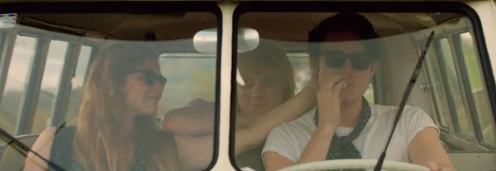
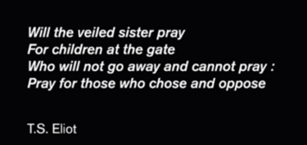

Historien om Steppeulven Eik Skaløe

Eik Skaløe er en 20 årig ung fyr som deltager i ungdomsoprøret i 1960'erne mod regeringen. Han er imod atomvåben og den facistiske væremåde i samfundet. Gennem hans politiske oprør møder han pigen Iben.
Eik vil gerne være forfatter men har ikke fundet sin stil endnu så han rejser til Paris.
Paris, kærlighed og mandskamp
I Paris starter Eik på sin roman om hans liv, som han kalder den uendelig roman fordi der altid er mere at skrive. Midlertidlig møder Iben en ny fyr hjemme i Danmark som hun tager med til Paris. Der opstår konflikt mellem de 2 hanner som nu skal kæmpe om kvinden. De 3 beslutter sig for at rejse til Gibraltar, på vejen bliver de anholdt for offentlig blufærdighedskrænkelse. Eik og Iben tager videre til Athen.
Stoffer og babyer

I Athen hænger de 2 tvillingesjæle ud på et tag hvor mange blaffere er og tager alverdens stoffer. Iben finder ud af at hun er gravid og får lavet en ulovlig abort og bliver rigtig syg. Eik rejser videre mod Indien og Iben tager hjem til Danmark med andre af blafferne fra taget.
Itsy Bitsy

Eik rejser tilbage til Danmark og falder tilbage i stofferne med Iben og de andre indtil en af deres venner en dag hopper ud fra et etagehus. Både Efter ikke at have set hinanden i lang tid finder Eik ud af at Iben er kommet ind på et teater i Jylland, dette tab inspirer ham til at skrive sange Itsy Bitsy.
Hip
Eik opsøger Stig Madsen og "overbeviser" ham og hans producer til at droppe den igangværende plade og starte på nyt sammen med Eik. De stifter banded Steppeulvene og laver deres første plade Hip. Flere af sangene indeholder beskeder og referencer til Iben, dette er alt et forsøg på at få hende tilbage, men Iben er kommet videre i livet. Så Eik tager steppeulvens livsstil til sig og rejser mod Nepal
Grænsen

Eik ender sin rejse på grænsen mellem Inden og Pakistan. Efter hans død finder man hans ufærdigegjordte roman, et brev til hans familie og en note til Iben.
End
Charing Cross Hotel
Walter writes to Oberstein and convinces him to meet in the smoking room of the Charing Cross Hotel where he promises additional plans for the submarine in exchange for money. The plan works and Holmes and Watson catch both criminals.
Adapted from Project Gutenberg